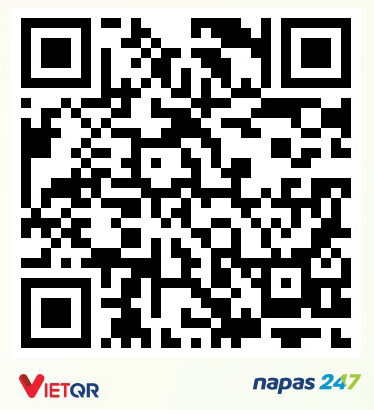

WAKETONE / SUPPORT US
Support WakeTone ♥
01 / ENGLISH
Support WakeTone ♥
WakeTone is free, with no ads, no account and no tracking. It is made by P2X Studio, a small independent software studio. If WakeTone keeps your speaker awake, a small tip helps us keep improving it. Thank you!
Ko-fi (card or PayPal, worldwide)
Bank transfer / Momo (Vietnam)
Scan with your banking app or Momo:

Other ways to help
Rate WakeTone in the Microsoft Store, tell a friend, or send feedback to p2xlab@gmail.com.
Other apps from P2X Studio
02 / TIẾNG VIỆT
Ủng hộ WakeTone ♥
WakeTone miễn phí, không quảng cáo, không tài khoản, không theo dõi. Ứng dụng do P2X Studio, một studio phần mềm độc lập nhỏ, phát triển. Nếu WakeTone giúp loa của bạn luôn sẵn sàng, một khoản ủng hộ nhỏ sẽ giúp chúng tôi tiếp tục cải thiện ứng dụng. Xin cảm ơn!
Chuyển khoản / Momo (Việt Nam)
Quét mã bằng ứng dụng ngân hàng hoặc Momo:
Ko-fi (thẻ hoặc PayPal, quốc tế)
Những cách ủng hộ khác
Đánh giá WakeTone trên Microsoft Store, giới thiệu cho bạn bè, hoặc gửi góp ý tới p2xlab@gmail.com.